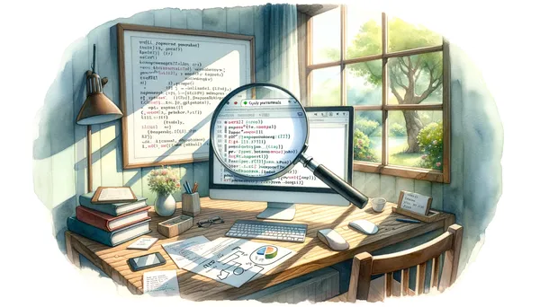
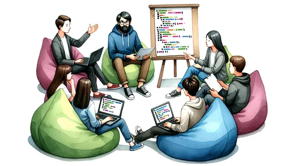
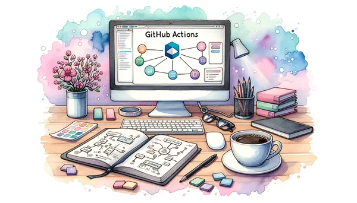

Eric J Ma's Website
written by Eric J. Ma on 2023-09-17 | tags: til htmx fastapi web development programming frontend backend python requests
In this blog post, I learned how to extract query parameters from FastAPI. I discovered how to access key-value pairs from a GET request using the `request.query_params` dictionary. Additionally, I found a solution to properly format URLs by using the `urllib.parse` submodule. This information was crucial in developing a blog writing assistant with a frontend in HTMX and a backend in FastAPI. Overall, it was a valuable learning experience that I hope will be useful to others as well.
Read on... (396 words, approximately 2 minutes reading time)written by Eric J. Ma on 2023-09-09 | tags: data science biotech research machine learning problem spotting problem scoping problem shepherding solution translating laboratory science protein engineering antibody therapies
In this blog post, I reflect on the importance of four key skills for data scientists in the biotech field: problem spotting, problem scoping, problem shepherding, and solution translating. These came from an article in the [Harvard Business Review](https://hbr.org/2023/09/4-skills-the-next-generation-of-data-scientists-needs-to-develop). I show by example the need to understand the real issues faced by our collaborators, ask probing questions, maintain regular communication, and speak the language of the audience -- the last one being crucial. These skills are crucial in building trust, understanding the underlying science, and developing effective solutions.
Read on... (1004 words, approximately 6 minutes reading time)written by Eric J. Ma on 2023-09-06 | tags: data science hiring interviewing code review coding skills candidate assessment documentation design choices machine learning
In this blog post, I discuss a different approach to evaluating a candidate's coding skills during an interview. I ask them to bring a piece of code they're proud of and conduct a code-review style discussion. This method reveals their standards of excellence, their ability to explain and defend their work, and their thought process behind their design choices. I also share a rubric for assessing coding skills, which includes factors like code organization, documentation, and the candidate's response to feedback.
Read on... (706 words, approximately 4 minutes reading time)written by Eric J. Ma on 2023-09-04 | tags: career growth promotion bonus peter principle work rewards motivation morale professional development incentives
In this blog post, I debunk the misconception that promotions are rewards for excellent work at your current level. Instead, I share a framework I learned before that promotions should be rewards for demonstrating sustained excellence at a higher level. Bonuses, on the other hand, are the appropriate reward for outstanding work at your current level. But are promotions and bonuses enough as a motivator?
Read on... (733 words, approximately 4 minutes reading time)written by Eric J. Ma on 2023-08-31 | tags: packaging setup.py setup.cfg python pyproject.toml enhancement proposal project configuration dependencies package management conda project structure
In this blog post, I explored the differences between `setup.cfg`, `pyproject.toml`, and `setup.py` in Python packaging. I explained their historical context and usage, and recommended using pyproject.toml as the setup configuration file for Python packages in 2023. I also discussed the importance of Python packaging for data scientists, and the distinction between `environment.yml` and `pyproject.toml`. The former defines a project's development environment, while the latter provides pip with installation and usage information for a Python package that I might be working on.
Read on... (818 words, approximately 5 minutes reading time)written by Eric J. Ma on 2023-08-30 | tags: code review unit tests research chemistry ml chemistry data splitting property prediction software testing code correctness
In this blog post, I discuss the importance of unit tests in research code. I share an experience from a code review with our intern, Matthieu, where we realized the need for rigorous testing of a non-standard splitting strategy in our ML model. We concluded that even research code, which might be discarded eventually, can benefit from thorough testing to ensure its correctness. This is particularly crucial when the code is used for comparisons or collaborations.
Read on... (497 words, approximately 3 minutes reading time)written by Eric J. Ma on 2023-08-28 | tags: automation biotech collaboration data insights data product data science model building predictive models product oriented protein engineering service oriented software engineering team collaboration tool building
In this blog post, I explore the two flavours of data science work: service-oriented and product-oriented. Service-oriented data science serves others in a one-off fashion, while product-oriented data science builds a reusable tool for a well-defined problem. Both have their value depending on the situation. I discuss the challenges in navigating between the two and emphasize the importance of adopting a product-first orientation. As an individual contributor or team lead, it's crucial to shift from being mere consumers of tooling to makers of tools, enhancing efficiency and scalability!
Read on... (972 words, approximately 5 minutes reading time)written by Eric J. Ma on 2023-08-27 | tags: til github actions cicd continuous integration continuous delivery dokku digitalocean deployment coding devops cost efficiency dokku server git dokku deployment
In my latest blog post, I share my experience of hosting a Dokku server on DigitalOcean and how I've managed to automate the deployment process using GitHub Actions. I delve into the cost benefits of using Dokku on DigitalOcean over other services like Heroku and Fly.io. I also provide a step-by-step guide on how to configure GitHub Actions to deploy apps to DigitalOcean automatically. If you're interested in saving time and money on app deployment, this post is a must-read.
Read on... (427 words, approximately 3 minutes reading time)written by Eric J. Ma on 2023-08-26 | tags: til github github actions github workflow git configuration workflow runner github permissions repo settings workflow permissions github token
Today, I learned how about a hidden setting that's needed to enable GitHub Actions to push code to its associated repo, and wrote it out as a tutorial. As a bonus, I also share how to correctly configure `git` within a GitHub actions workflow. Discover the trick with me!
Read on... (180 words, approximately 1 minute reading time)written by Eric J. Ma on 2023-08-22 | tags: automation command execution cron cron jobs init.d linux linux commands linux startup linux tutorial rc.local startup scripts systemd til
Today I learned how to execute arbitrary commands on startup on a Linux machine. It's pretty simple. Curious to hear more?
Read on... (128 words, approximately 1 minute reading time)